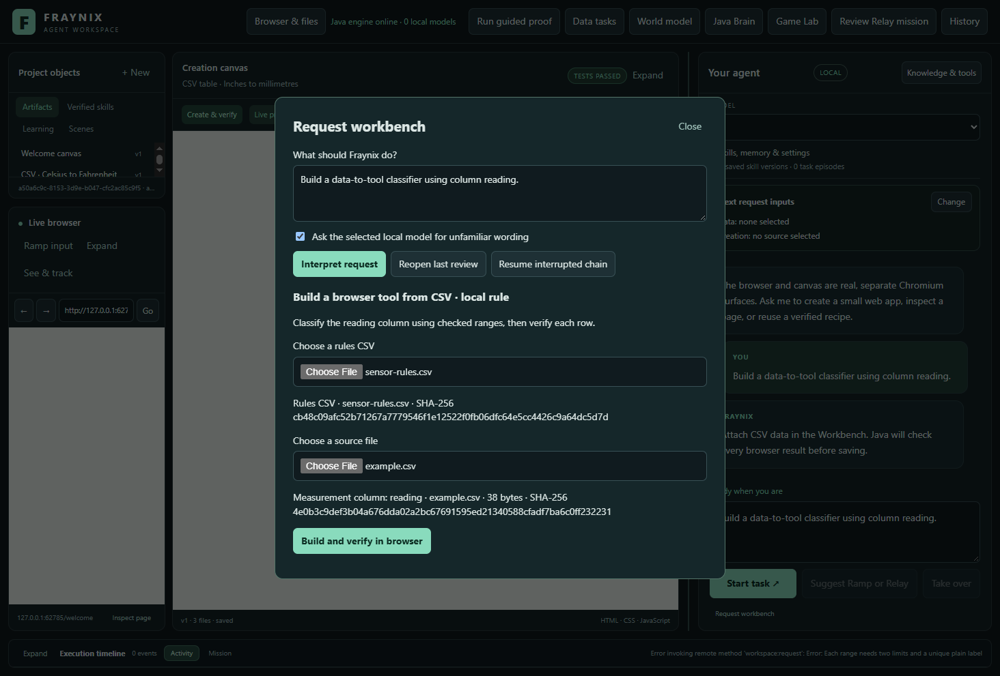
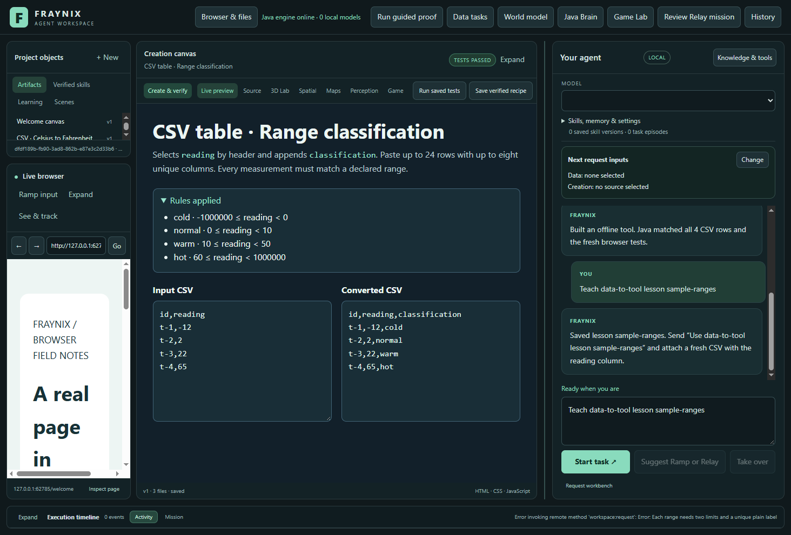
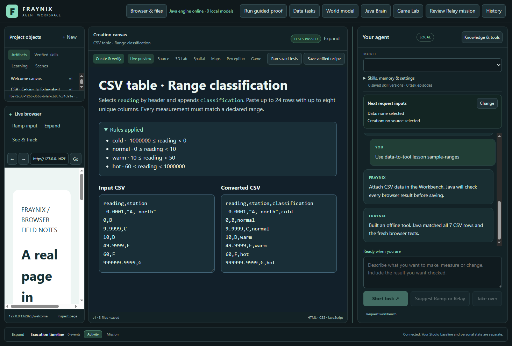

Teach a checked classifier from rules in a CSV
Teach a classifier from explicit CSV ranges, then reuse the checked rules on new measurements. Java checks every browser result, including unseen values and exact range boundaries.

Workbench binds the exact rules CSV and measurement CSV

Chat saves the named lesson after the original classifier verifies

Canvas shows the checked intervals and seven fresh classifications
System files
Open source